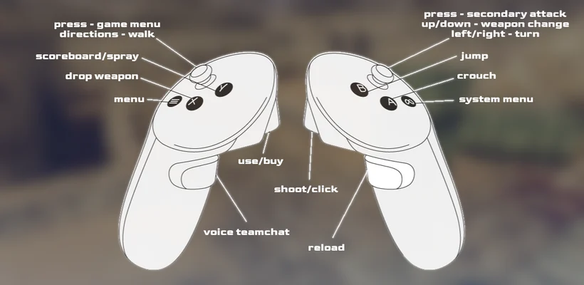

Install CSVR
The port is supported on:
- Meta Quest 2
- Meta Quest Pro
- Meta Quest 3/3s
- Pico Neo 3 (all variants)
- Pico 4 (all variants)
Required: You need to own Counter Strike 1.6 on Steam or elsewhere. Make sure it is installed correctly on your computer. (Get Counter Strike 1.6 on steam: https://store.steampowered.com/app/10/CounterStrike/ The pack also includes CS: Condition Zero, which is not working though, so ignore it.)
Video tutorial: https://youtu.be/wrCPeKznm5E?si=cUS_LjMGoAECqSSV
1) Download the APK and install via SideQuest.
2) Start CSVR once on your headset, so the app can create the folder. Give permissions if asked. Note: The app will create the following folder on your headset: “xash”. Don’t mind that it’s using the same base folder as Lambda1vr (Our HL1 VR port). It won’t interfere with it.
3) Go to your Steam installation of Counter Strike 1.6. (The location is likely “SteamLibrary\steamapps\common\Half-Life”).
4) Copy both folders “cstrike” and “valve” into the “xash” folder on your headset (if you already have Lambda1VR installed, the valve folder will already be present and doesn’t need copying again). Copy the whole folders, not just the contents. (Just drag and drop both folders into “xash”.)
5) Start CSVR on your headset from “Unknown sources”.

Server Hosting – Hosting a game directly from the headset!
In CSVR you can host a multiplayer server directly on your headset. This works for local games and worldwide visible internet games. Meaning, you can create a server to play with friends, other community members or random strangers, just by using the in-game multiplayer menu. We recommend joining our discord to meet-up with other patron members to play with!
(Discord link https://discord.gg/ueghpf9zfK)
If you’re interested in hosting your own server, the best results are achieved when your internet provider supports Full Cone NAT. This type of NAT configuration allows for more efficient and low-latency connections, making gameplay smoother and more responsive for everyone joining your server. You can easily check your NAT type by visiting https://www.checkmynat.com/. If you do not have this type of internet, your created servers may not be visible to other players.
However, if Full Cone NAT isn’t available on your network, you can still host a game using the built-in in-client NAT traversal solution. While this method introduces slightly higher latency (mostly for Voice chat), it remains a functional option for most casual matches. Regardless of your network setup, joining other games is always supported and works seamlessly.
CSVR features hosting a server directly on the headset for LAN and Internet games. If your friends can’t see your server, you likely need to click the NAT checkmark box in the multiplayer menu. NAT has slightly higher latency, so only use as a fallback option.
Cross Play
If you want to cross play with PC players, they will need to install the Xash3D-FWGS engine into their existing Counter-Strike 1.6 installation. This engine can be downloaded from the official GitHub release page: https://github.com/FWGS/xash3d-fwgs/releases/tag/continuous. In addition, they must also include the cs16-client library, which is available at: https://github.com/Velaron/cs16-client/releases/tag/continuous.
CSVR also features cross play with CS1.6 Xash3D on Android. Most servers you’ll see in the multiplayer browser are populated with mobile players playing with gamepad or touchpad controls.
Note: The current build of CSVR does not feature cross play with Steam players (playing the original version).